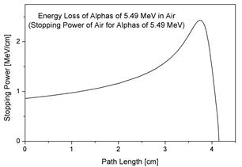

Alpha particles, which has electric charge and bigger mass than other particles, has a definite moving radius when moving through material. When these alpha particles move, they collide with particles that constitutes the material, ionizing the particles and both losing energy. Alpha particles have very big momentum, so they go straight in the direction they were initially heading. The moving radius of an alpha particle is defined by the distance that the alpha particle moved, colliding with other particles, before stopping. This moving range is dependant on the atom density of the material, the alpha particle's initial energy, the molar mass of the material, etc. The amount of ionized particles that makes up the material proportionates on the amount of energy the alpha particle loses while moving(-dE/dx), in other words, stopping power. When the alpha particle gets slower and slower, the more time the alpha particle spends close to the other particles, resulting the odds of electrons transferring increasing. Therefore, the alpha particle eventually loses all of its energy and stops at some point, and accordingly, the graph form under this paragraph appears. This graph is called the Bragg curce, and the point which has the maximum stopping power is called the Bragg peak. The graph under is the Bragg curve of an alpha particle that's decay energy was 5.49MeV and came from a Radon isotope with the molar mass 222.
When the alpha particles that came from radioactive minerals inside get slower and nearly stops, it damages nearby particles more and causes discolouration. This discolouration eventually makes up the halo, and since the moving radius of the alpha particle differentiates by the material they are moving in, and that results in the halo radius being different in all material.